【概率模型】CRF:Conditional Random Field(条件随机场)
CRF主要用于序列标注，可以简单理解为对序列的每一帧都进行分类
逐帧softmax
为了解决上述问题。可以利用逐帧softmax
将这个序列用 CNN 或者 RNN 进行编码后，接一个全连接层用 softmax 激活，如下图所示：
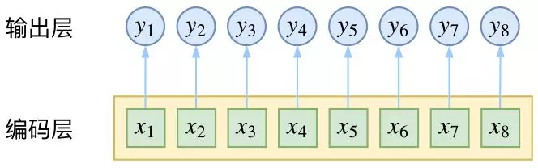条件随机场
然而，当我们设计标签时，比如用 s、b、m、e 的 4 个标签来做字标注法的分词，目标输出序列本身会带有一些上下文关联，比如 s 后面就不能接 m 和 e，等等。逐标签 softmax 并没有考虑这种输出层面的上下文关联，所以它意味着把这些关联放到了编码层面，希望模型能自己学到这些内容，但有时候会“强模型所难”。
而 CRF 则更直接一点，它将输出层面的关联分离了出来，这使得模型在学习上更为“从容”：
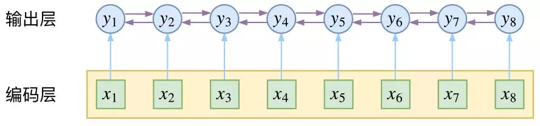
而在序列标注任务中，我们的正确答案是一般是唯一的。比如“今天天气不错”，如果对应的分词结果是“今天/天气/不/错”，那么目标输出序列就是 bebess，除此之外别的路径都不符合要求。
换言之，在序列标注任务中，我们的研究的基本单位应该是路径，我们要做的事情，是从 k^n 条路径选出正确的一条，那就意味着，如果将它视为一个分类问题，那么将是 k^n 类中选一类的分类问题。
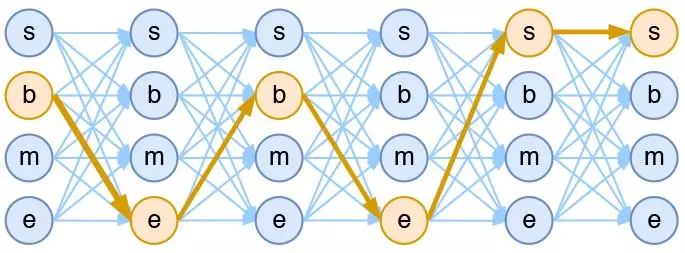
这就是逐帧 softmax 和 CRF 的根本不同了：前者将序列标注看成是 n 个 k 分类问题，后者将序列标注看成是 1 个 k^n 分类问题。
具体来讲，在 CRF 的序列标注问题中，我们要计算的是条件概率：
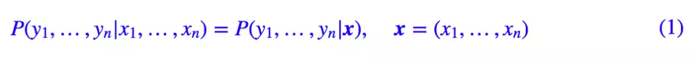
我们举个例子：
我们可以得到以下模型图：
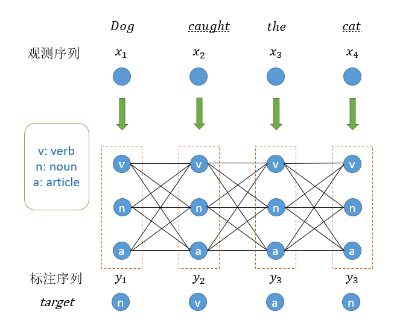
当模型输入句子 ”Dog caught the cat“ 时，我们希望模型能够输出标注序列：“n v a n”的概率最大
那么如何根据这个状态图计算出序列”n v a n“的出现的概率呢？
这里就引出了概率无向图模型：（注：个人认为条件随机场模型是一个概率无向图模型，而线性链条件随机场是一个有向图模型）
对于上列图，我们定义两种特征
- 转移特征
定义在边上的特征。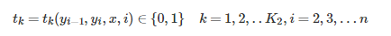
表示观察序列X在i及i-1位置上的标记转移概率 - 状态特征
定义在点上的特征表示对于观察序列X其i位置的标记概率
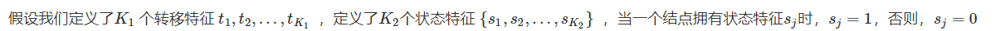
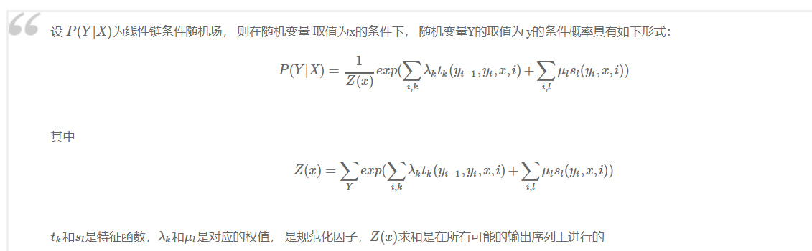
定义CRF中的特征函数
现在，我们正式地定义一下什么是CRF中的特征函数，所谓特征函数，就是这样的函数，它接受四个参数：
- 句子s（就是我们要标注词性的句子）
- i，用来表示句子s中第i个单词
- l_i，表示要评分的标注序列给第i个单词标注的词性
- l_i-1，表示要评分的标注序列给第i-1个单词标注的词性
它的输出值是0或者1,0表示要评分的标注序列不符合这个特征，1表示要评分的标注序列符合这个特征。
Note:这里，我们的特征函数仅仅依靠当前单词的标签和它前面的单词的标签对标注序列进行评判，这样建立的CRF也叫作线性链CRF，这是CRF中的一种简单情况。为简单起见，本文中我们仅考虑线性链CRF。
最大熵模型
考虑NLP中的消除歧义问题。集合$A$是结果候选集合，$B$是歧义点的上下文
于是$f(a,b)$为一个特征
运用最大熵模型
可以看出最大熵模型，是寻找一个分布，在这个分布下熵达到最大
于是可以转换为问题
从特征函数到概率
定义好一组特征函数后，我们要给每个特征函数f_j赋予一个权重λ_j。现在，只要有一个句子s，有一个标注序列l，我们就可以利用前面定义的特征函数集来对l评分
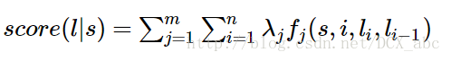
标准化
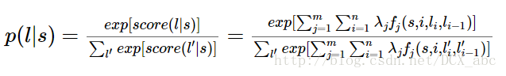
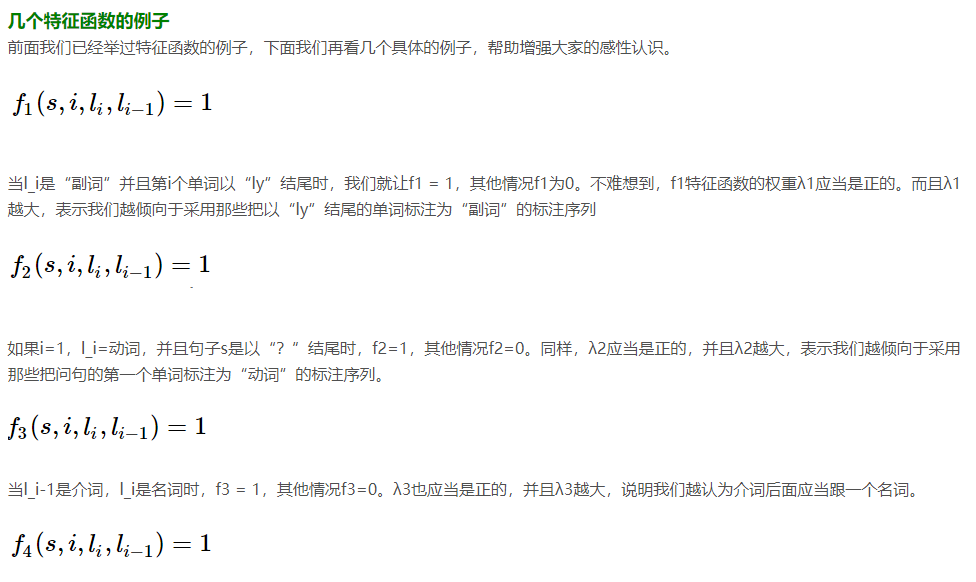